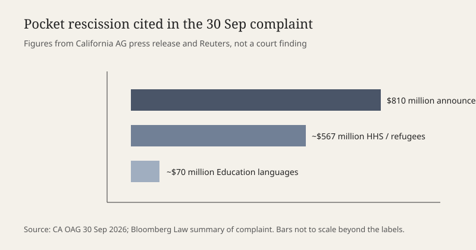

Washington · appropriations · 1 October 2026
California and six states sued over an $810 million pocket rescission filed before the fiscal year ended

What is agreed across desks
On Wednesday, 30 September 2026, California Attorney General Rob Bonta and the attorneys general of Maine, Maryland, Michigan, Nevada, New Mexico, and Oregon filed a complaint in the U.S. District Court for the Northern District of California. Reuters reported the case the next morning as a challenge to the Trump administration’s refusal to spend money Congress had appropriated, including about $810 million the White House moved to cancel before fiscal year 2026 ended at midnight. Bloomberg Law identified the docket as California v. Trump, No. 26-cv-11185.
The California Department of Justice press release, dated 30 September, gives the administration’s own timing. On 25 September, five days before the fiscal year closed, President Donald Trump announced that the administration would unilaterally rescind $810 million it had determined “does not benefit American citizens.” The same release says the coalition argues that the impoundment, including that pocket rescission, violates the Constitution and the Administrative Procedure Act. Bloomberg Law’s summary of the complaint adds two line items inside the $810 million figure: about $567 million in Department of Health and Human Services funds tied to refugee support, and nearly $70 million in Department of Education funds for foreign-language instruction. Those subtotals are allegations in a pleading and a press summary, not a Treasury warrant reproduced here.
A separate Wednesday complaint, National Hep-Camp Association v. the administration in the District of Columbia, seeks access to nearly $25 million for education of students from migrant and seasonal farmworker families. That case is related in mechanism and distinct in parties and dollar amount. Neither complaint has produced a merits ruling in the sources published by the morning of 1 October.
What is only a quote
The White House description of the money as not benefiting American citizens is a characterization. It is not an accounting identity. The states’ phrase, reported by Bloomberg Law, that forcing the funds to expire is “tantamount to theft” is a litigation argument. Theft is a criminal concept; the complaint is a civil constitutional and administrative claim. Scoring either sentence as a proven fact about motive or crime would outrun the record.
California’s headline, “Latest Attempt to Weaponize Federal Funding,” is the attorney general’s framing. The filing itself is the checkable event. Readers can hold the headline and the docket apart.
Mechanism
A rescission, in ordinary appropriations practice, is a proposal to cancel budget authority that Congress has already granted. Under the Impoundment Control Act of 1974, the president sends a special message, and Congress has a limited window to approve the cancellation. If Congress does not act, the statute generally requires the funds to be made available again. A “pocket rescission” is the label used when that message arrives so late in the fiscal year that the authority expires before the window can run. The money then lapses by the calendar rather than by a vote.
That timing is why 30 September mattered. Fiscal year 2027 began on 1 October. Unobligated balances from the prior year do not automatically roll forward unless the appropriation says so. A late cancellation request can therefore have the practical effect of a cancellation even if both chambers would have rejected it in October. The Government Accountability Office has treated similar maneuvers as inconsistent with the Impoundment Control Act in other administrations. Those earlier opinions are context, not a holding in this docket.
The constitutional clauses named in the California release are separation of powers, appropriations, and presentment. Article I gives Congress the power to spend. Presentment is the rule that a bill becomes law only after passage and signature or veto override. The states’ theory is that a pocket rescission rewrites an appropriation without a new statute. The administration’s likely theory, not yet fully briefed in the sources used here, is that the Impoundment Control Act permits a late message and that courts should not order the obligation of expired accounts. Both theories are arguments until a judge writes an order.
Seven plaintiff states is not a national class. States that did not join are not bound by any future injunction unless the court writes one with nationwide scope, which is itself contested after recent Supreme Court limits on universal relief. The $810 million is also not the whole federal budget. It is the figure the White House announced on 25 September. The California release separately warns that other appropriated money still unobligated on 30 September, including emergency services and education, was at risk of expiring. “At risk” is not the same count as “cancelled.”
What the story is not
It is not a government shutdown. A continuing resolution signed in early September funds agencies through 11 December 2026. It is not a finding that refugees lost a specific benefit on 1 October; that eligibility change, reported elsewhere, is a different statute. It is not proof that the $567 million and $70 million lines were the only uses of the $810 million, because the complaint summaries do not itemize the remainder. It is not a prediction of who wins. Pocket-rescission fights turn on standing, mootness once the year has closed, and whether a court can revive lapsed authority. Those questions are open on this page.

Source articles and scores
| Outlet | Headline | T | N | C |
|---|---|---|---|---|
| Reuters | California, six other states sue Trump administration over federal funds | 95 | 0 | 98 |
| California DOJ | Attorney General Bonta Takes Trump to Court over Latest Attempt to Weaponize Federal Funding | 88 | -25 | 70 |
| Bloomberg Law | California, Maine Sue Trump Over Withholding of Federal Funds | 92 | 0 | 95 |